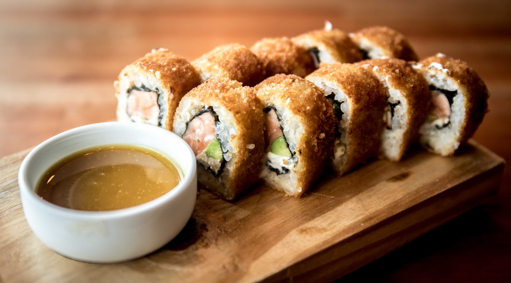
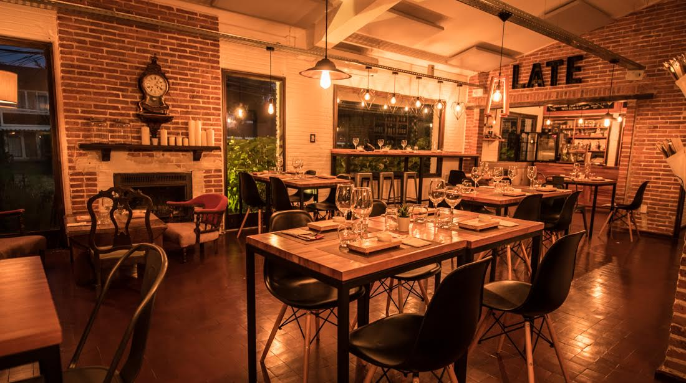

Sushi fusión peruano asiático
Cocina de autor Nikkei en Parada 7 de La Mansa: ceviches, tiraditos, nigiris, omakase y rolls, con lo mejor que nos regala la región.

Bienvenidos
Late
La cocina de autor es poner tu personalidad en lo que amás.
Cocina Nikkei en Parada 7 de La Mansa: el encuentro de Perú y Japón con el pescado fresco como protagonista, en un salón cálido con buena música donde tu mascota también es bienvenida.
Más de nosotros
Lo que dicen de nosotros
Reconocidos por nuestros comensales en Google y TripAdvisor.
“La comida es de la mejor calidad en la punta y trabajan el concepto de cocina fusión muy bien. Hay opciones de carne y vegetarianas. Han remodelado todo el local dejándolo aún más bello, y son súper petfriendly.”
“De los mejores sushis que he comido por el este. Destaco mucho que el relleno del sushi tenía abundante salmón, estaba riquísimo. Pedimos también ceviche de pesca blanca y estaba muy bueno también.”
“Excelente experiencia. El sushi es de primer nivel y el postre volcán es imperdible. Totalmente recomendado!”
Bienvenidos a la experiencia Late
Reservá por WhatsApp o consultanos por catering para tu evento.
Reservar por WhatsApp